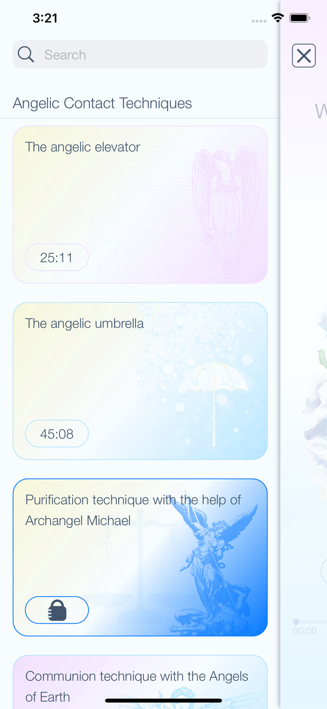
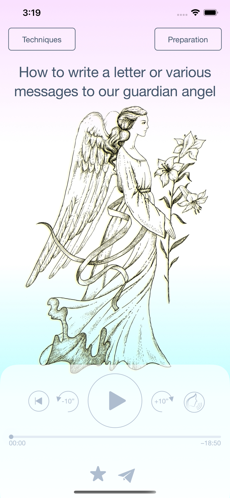
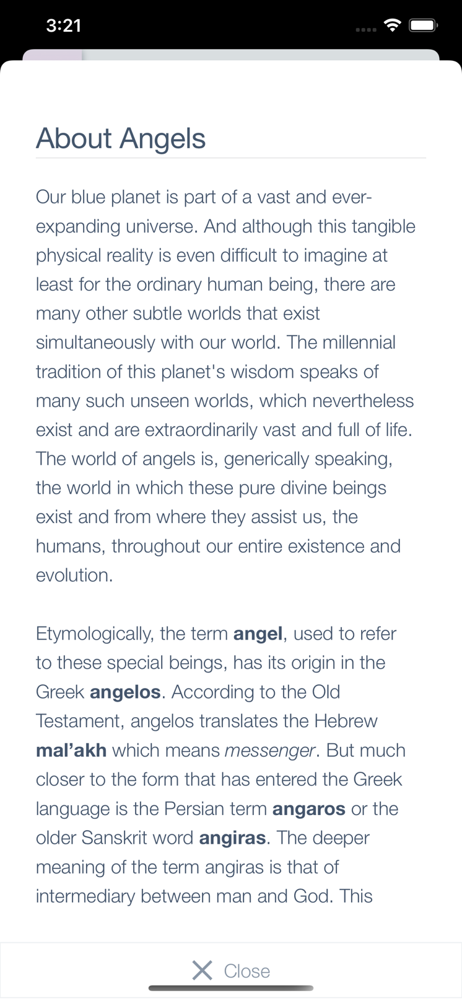

Angelic
Contact
Welcome to Angelic Contact!
We offer you access to a series of simple but effective techniques, through which you can open your heart to the elevated and pure world of angelic entities. May this journey be a wonderful and profoundly transformative experience for you. We wish you a divinely integrated success!
Application Screenshots




FAQ
A: Yes, that's OK. We included intervals of silence in each technique for every step that requires the user to become very attentive to subtle perceptions and inner states or inspirations. For instance, when feeling the answer to the consecration, or when becoming aware of the messages, inspirations, or emotions transmitted by the contacted angelic entities.
A: Just like any other technique or practice, the consecration must be applied many times in order to be mastered. The best thing we can always do before doing a consecration (and especially if we are novices) is to make sure we are in a state of calm, and inner peace and that we eliminate all thoughts and worries. This way, we can easily become internalized. At the same time, it is essential to have a state of detachment so that we don't influence or induce the convenient answer, from our point of view, but embrace the direct answer that flows from God like a subtle energy flow straight through the top of our head. The Divine is always supporting us when we want to do spiritual work and we have our hearts open, and we are animated by sincere and pure aspiration.
A: Yes. The premium techniques, once purchased, are associated with the Apple ID used for each transaction. As long as you are using the same Apple ID on another iPhone or iPad you will be able to also use the purchased premium techniques. Please make sure to use the Restore Purchases option available on the Premium Techniques screen.
A: You are able to share the purchased techniques only with your family members, by using the Apple Family Sharing feature.
A: Yes. That is actually a very good initiative because the power of unison can greatly amplify the effects and echoes of the performed techniques. Our recommendation is that only one technique should be done at a meeting, and each participant will invoke his (her) own guardian angel when (if) necessary during the technique.
Afterward, the members of the group can share with each other, if they choose to, the inspirations and states experienced during the realization of the technique.
Afterward, the members of the group can share with each other, if they choose to, the inspirations and states experienced during the realization of the technique.
Contact